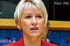
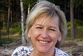

Margot Elisabeth Wallström
Politiker, utrikesminister, ämbetsman(S), EU-kommissionär, FN-uppdrag, HedersDr, UD-minist.
| Född: | 1954 Kågeträsk, Kågedalens fs, Skellefteå kn. |
|---|
| Levde: | 1971 Kåge, Kågedalens fs, Skellefteå kn. [1] |
|---|
| Vigsel: | 1984-08-10 Bråten, Hammarö, Hammarö fs, Hammarö kn. [2] |
|---|
| Levde: | 1991 Bråten 3:1, Bråten, Hammarö, Hammarö fs, Hammarö kn. [2] |
|---|
Noteringar
Margot Elisabeth Wallström, född 28 september 1954 i Kåge i Skellefteå kommun, är en svensk politiker (socialdemokrat) och ämbetsman. Hon är dotter till Manfred Wallström och Lydia Wallström (född Sundberg). Sedan 1984 är hon gift med arbetsledaren Håkan Wallström (född Olsson).
POLITISKT ENGAGEMANG OCH MINSISTER I SVERIGE
Redan i tidiga år engagerade hon sig politiskt, bland annat som ombudsman för SSU 1974-1977. Wallström var riksdagsledamot 1979-1985. Hon var biträdande civilminister (konsument-, kyrko- och ungdomsminister) 1988¿1991, kulturminister 1994¿1996 och socialminister 1996¿1998. Hon avgick kort efter riksdagsvalet 1998 efter en konflikt med statsminister Göran Persson.
Efter att Mona Sahlin tillträtt som partiordförande för socialdemokraterna fick Wallström i uppgift att utveckla socialdemokraternas EU-politik tillsammans med förre utrikesministern Jan Eliasson. Borgerliga politiker, exempelvis Fredrik Reinfeldt och Carl B. Hamilton, ansåg att detta arbete inte var förenligt med den ed varje kommissionär avlägger om att verka för gemenskapens bästa.[1]
Wallström är en mycket populär politiker inom Socialdemokratin.[2] Hon har flera gånger fått frågan om hon vill ställa upp som partiledare och flera gånger varit den som flest vill ha som partiledare. Hon har alltid tackat nej och sade 2012 att "Jag hoppas att det ska kanske ta slut någon gång och att man ska förstå att jag menar allvar. Det tåget har gått."[3]
CIVIL KARRIÄR OCH STYRESLEUPPDRAG
Wallström var banktjänsteman 1977-1979 och kamrer på Sparbanken Alfa 1986-1987.
Hösten 2010 meddelades att Wallström tackat ja till att bli ny styrelseordförande för Lunds universitet efter Allan Larsson. Wallström avsåg att tillträda denna post i februari 2012.[4]
POLITISKT ENGAGEMANG I EU
Året därpå utnämndes hon till ledamot i Europeiska kommissionen och ansvarade för miljöfrågor i Prodi-kommissionen 1999¿2004. Från november 2004 till februari 2010 var Wallström EU-kommissionens första vice ordförande, närmast under ordförande José Manuel Barroso. Som sådan hade hon ansvar för konstitutionella frågor, institutionella relationer och kommunikationsstrategi.
Wallström utsågs till European Commissioner of the Year[förtydliga] av tidningen European Voice, men när tidningen The Economist under hösten 2009 summerade EU-kommissionens arbete beskrevs Wallströms insats som en besvikelse.[5]
ENGAGEMANG I FN
I februari 2010 utnämnde Förenta nationernas generalsekreterare Ban Ki-Moon, Wallström, till sin särskilda representant för att bevaka kvinnors utsatta situation i krig och andra konflikter. Wallströms uppgift blir att genomföra FN-resolutionen 1820 om sexuellt våld mot civila i konflikter. FN:s säkerhetsråd antog i september 2009 resolution 1888. Resolutionen bygger på tidigare säkerhetsrådsresolutioner 1325 (2000) och 1820 (2008) och innebär bland annat att generalsekreteraren skall utse en "särskild representant" som skall leda och koordinera arbetet för att få slut på det sexuella våldet under och efter konflikter.
I maj 2012 lämnade Wallström sitt FN-uppdrag.
I august 2012 publiceras boken "Margot", en biografi av Bengt Ohlsson, Brombergs Förlag.
PRISER OCH UTMÄRKELSER
Wallström har utnämnts till hedersdoktor vid Chalmers tekniska högskola (2001)[6], Mälardalens högskola, University of Massachusetts i Lowell och Umeå universitet[7] och erhöll IAIA Global Environmental Award.
Den 6 juni 2008 offentliggjordes att Margot Wallström fått H.M. Konungens medalj av 12:e storleken i Serafimerordens band "För mångåriga betydelsefulla insatser inom svensk och europeisk politik".[8][9]
BIBLIOGRAFI
Wallström har skrivit två böcker tillsammans med Europaparlamentarikern Göran Färm:
Folkens Europa eller Varför är det svårt att älska EU? (Hjalmarson & Högberg, 2004)
Elitprojekt - Nej! Folkets Europa (Bilda Förlag, 2008).
BIOGRAFI
"Margot", 2012-08, Bengt Ohlsson, journalist och författare, Brombergs Förlag.
¿När mötet avslutas ser jag mig omkring i rummet och kan konstatera att alla ser mer hänförda ut än vad de gjorde när Margot kom in. Som om de tänker: nu förstår jag varför hon är socialdemokratins superstjärna.±
Författaren och journalisten Bengt Ohlsson har följt Margot Wallström i spåren, från hennes arbete på FN i New York till barndomens Kåge i Västerbotten. Han har medverkat i stenhårda förhandlingar med krigsdrabbade länder där övergrepp på kvinnor är vardagsmat, följt med på glamourösa välgörenhetsgalor och suttit vid köksbordet tillsammans med hennes familj.
Frågorna har varit många: vad driver Margot Wallström, hur ser hon på sig själv och sina uppdrag? Hur kom det sig att flickan från arbetarhemmet i Kåge kom att ingå i en svensk tradition av internationellt engagemang på hög nivå? Och varför ville hon inte komma hem och bli partiordförande när Socialdemokraterna behövde henne som mest?
Margot Wallström och Bengt Ohlsson har samtalat och här är hans svar på vad som format människan Margot.
brombergs.se/titel/margot/163
www.dn.se/dnbok/dnbok-hem/timmarna-med-margot
www.litteraturmagazinet.se/bengt-ohlsson/intervjuer/margot
sverigesradio.se/sida/artikel.aspx?programid=4381&artikel=5259716
www.svd.se/kultur/litteratur/fragmentariskt-inifran-s-krisen_7489204.svd
REFERENSER
Vem är det : Svensk biografisk handbok 1999, red. Elisabeth Gafvelin, Kunskapsförlaget P. A. Norstedt & Söners Förlag, Stockholm 1998 ISBN 91-1-300536-7 ISSN 0347-3341 s. 1144
NOTER
1.^ TT (2007-03-19). ”Klartecken för Wallströms s-uppdrag”. DN.
www.dn.se/nyheter/politik/klartecken-for-wallstroms-s-uppdrag
2.^ Johan Croneman. "Johan Croneman: Koketteri på toppnivå när SVT krattade Ưmanegen för Margot Wallström", Dagens Nyheter, 5 juni 2012. Läst den 15 juni 2012.
www.dn.se/kultur-noje/johan-croneman-koketteri-pa-toppniva-nar-svt-krattade-manegen-for-margot-wallstr
3.^ Agenda, SVT, 2 juni 2012. Sett den 15 juni 2012.
4.^ "Margot Wallström" tillträdande ordförande för Lunds universitet" i Studentnyheterna i Radio AF 2010-09-20
5.^ The Economist: A commission report-card 2009-09-24
www.economist.com/node/14505501?story_id=14505501
6.^ Chalmers: Hedersdoktorer: Margot Wallström, läst 15 april 2009
www.chalmers.se/sv/om-chalmers/akademiska-hogtider/promotion/hedersdoktorer/Sidor/margot-wallstrom.aspx
7.^ Pressmeddelande Umeå universitet Hämtat 2010-10-28 2010
www.medfak.umu.se/om-fakulteten/aktuellt/nyhetsvisning//valdsbekampare-blir-hedersdoktorer.cid134699
8.^ Göteborgs-Posten 2008 06 06
9.^ ”Medaljförläningar 2008-06-06”. Kungahuset, Kungl. Hovstaterna.
www.kungahuset.se/monarkinhovstaterna/densvenskamonarkin/medaljer/medaljforlaningar/arkivmedaljforlaningar/medaljforlaningar20080606.5.36df73941192994694f80007190.html
VIDARE LÄSNING
Sydow, Emily von (2009). Margot Wallström: den svenska modellen. Stockholm: Ekerlid. Libris 11500547. ISBN 978-91-7092-119-3
www.ekerlids.com/epages/EkerlidsDB.sf/sv_SE/?ObjectPath=/Shops/Ekerlids/Products/1391
EXTERNA LÄNKAR
Wikimedia Commons har media som rör Margot Wallström.
commons.wikimedia.org/wiki/Category:Margot_Wallstr%C3%B6m
Europeiska kommissionen: vice ordförande Margot Wallström
ec.europa.eu/archives/commission_2004-2009/index_en.htm
Margot Wallström på Sveriges riksdags webbplats
sv.wikipedia.org/wiki/Sveriges_riksdag
ÄMBETEN
Sveriges biträdande civilminister
Konsument-, ungdoms- och kyrkominister
1988¿1991
sv.wikipedia.org/wiki/Lista_%C3%
Sveriges kulturminister
1994¿1996
Sveriges socialminister
1996¿1998
EU-kommissionär från Sverige
1999¿2010
EU:s miljökommissionär
1999¿2004
EU-kommissionens förste vice ordförande
2004¿2010
EU-kommissionär
med ansvar för institutionella relationer och kommunikation
2004¿2010
Utrikesminister i Stefan Löfvéns rödgröna minoritetsregering från hösten 2014
KÄLLA:
sv.wikipedia.org/wiki/Margot_Wallstr%C3%B6m
Personhistoria
| Årtal | Ålder | Händelse |
|---|
| 1954 |
|
Födelse 1954 Kågeträsk, Kågedalens fs, Skellefteå kn |
| 1957 |
|
Systern Barbro Vallström föds 1957 Kågeträsk, Kågedalens fs, Skellefteå sn [1] |
| 1971 |
|
Levde 1971 Kåge, Kågedalens fs, Skellefteå kn [1] |
| 1984 |
|
Vigsel Håkan Olsson Wallström 1984-08-10 Bråten, Hammarö, Hammarö fs, Hammarö kn [2] |
| 1991 |
|
Levde Håkan Olsson Wallström 1991 Bråten 3:1, Bråten, Hammarö, Hammarö fs, Hammarö kn [2] |
| 1993 |
|
Fadern Ernst Manfred Vallström dör 1993-12-12 Kåge, Kågedalens fs, Skellefteå kn [3] |
| 2009 |
|
Modern Lydia Amanda Sundberg dör 2009-09-20 Sörbygatan 32, Kåge, Kågedalens fs, Skellefeå kn [4] |
Dokument
Källor
| [1] | Mtl Västerbottens län 1971 |
| |
| | |
| [2] | Mantalslängd 1991, Värmlands län |
| |
| | |
| [3] | RTB 93 / SPAR 92f / SPAR 95 |
| |
| | |
| [4] | FK 09 / man91 |
| |
|
|
2012-08. Margot Wallström i samtal
med Bengt Ohlsson, som publicerar biografin:
"Margot"
Bengt Ohlsson, Journalist och författare
Förlag: Brombergs
Bandtyp: Inbunden
Antal sidor: ca 200
ISBN: 9789173373326
Utk.: augusti 2012
Genre: Facklitteratur
brombergs.se/titel/margot/163
|
| |
|
| 2004-09-30. Margot Wallström |
| |
|  |
| 2004-09-30. Margot Wallström |
| |
|  |
2008-06-29. Sommar med Margot Wallström i SR P1
sverigesradio.se/sida/artikel.aspx?programid=2071&artikel=2123304
Producent: Ulla Walldén, ulla.wallden@sr.se
|
| |
 |
2009. Margot Wallström
Bokomslag:
Margot Wallström - Den svenska modellen
Författare: Emily von Sydow
Källa:
www.ekerlids.com/
|
|

{kind=link}
{kind=link}
{kind=link}
{kind=link}